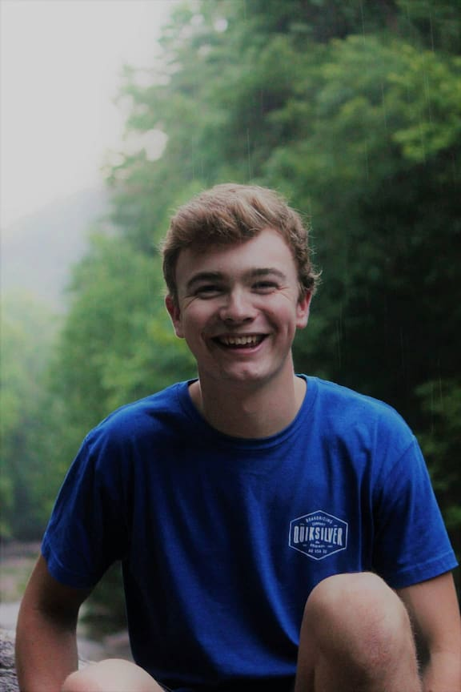

About Us -- Dry Oars Rafting Company
Our Mission:

At Dry Oars Rafting Company, our mission is to deliver thrilling, safe, and unforgettable river adventures that connect people to the wild beauty of Idaho’s waters. Guided by our commitment to safety, stewardship, teamwork, authentic adventure, and respect for nature, we strive to make every trip a journey that strengthens both spirit and community.
History - An Excellent Adventure
Dry Oar Rafting Company is the pipe-dream made reality by two wanderlusting accountants from Idaho Falls.
In 1915, 9 year olds Billy Hammers and Theodore (Teddy) Wriggly sat in their school house, staring longingly out the window at the great Snake River.
They yearned for the summer months of splashing in the currents, treking down the length of the river, and racing to the opposite bank.
One day, they knew, it would be their destiny to go from end to end.

Fast forward 35 years, they found themselves in a similar position. Watching the Snake River flow day by day in all its majesty.
Though successful, they knew there was more to life than money, so they finally went back to the water.
Billy acquired a raft from a military contact, and took it out with Teddy that same day.
One thing led to another, family and friends begged to go out with them, then locals and non-locals alike were flocking to their raft shed looking for a rafting adventure.